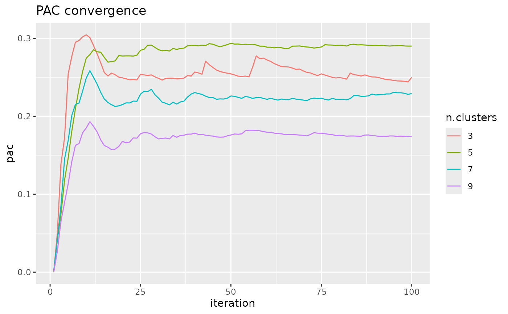

Consensus Clustering and Proportion of Ambiguously Clustered Pairs
Source:R/PAC.R
consensus_cluster.RdCalculate consensus clustering and proportion of ambiguously clustered pairs (PAC) with hierarchical clustering.
Usage
consensus_cluster(
x,
k_min = 3,
k_max = 100,
n_reps = 100,
p_sample = 0.8,
p_feature = 1,
p_minkowski = 2,
dist_method = "euclidean",
linkage = "complete",
lower_lim = 0.1,
upper_lim = 0.9,
verbose = TRUE
)Arguments
- x
A samples x features normalized data matrix.
- k_min
The minimum number of clusters calculated.
- k_max
The maximum number of clusters calculated.
- n_reps
The total number of subsamplings and reclusterings of the data; this value needs to be high enough to ensure PAC converges; convergence can be assessed with pac_convergence.
- p_sample
The proportion of samples included in each subsample.
- p_feature
The proportion of features included in each subsample.
- p_minkowski
The power of the Minkowski distance.
- dist_method
The distance measure for the distance matrix used in hclust; must be one of "euclidean", "maximum", "manhattan", "canberra", "binary" or "minkowski".
- linkage
The linkage method used in hclust; must be one of "ward.D", "ward.D2", "single", "complete", "average", "mcquitty", "median" or "centroid"
- lower_lim
The lower limit for determining whether a pair is clustered ambiguously; the lower this value, the higher the PAC.
- upper_lim
The upper limit for determining whether a pair is clustered ambiguously; the higher this value, the higher the PAC.
- verbose
Logical value used for choosing to display a progress bar or not.
Value
A data.frame with PAC values across iterations, as well as parameter values used when calling the method.
References
Monti, S., Tamayo, P., Mesirov, J., & Golub, T. (2003). Consensus clustering: a resampling-based method for class discovery and visualization of gene expression microarray data. Machine learning, 52(1), 91-118. https://doi.org/10.1023/A:1023949509487
Senbabaoglu, Y., Michailidis, G., & Li, J. Z. (2014). Critical limitations of consensus clustering in class discovery. Scientific reports, 4(1), 1-13. https://doi.org/10.1038/srep06207
Examples
pac.res <- consensus_cluster(iris[, 1:4], k_max = 20)
#> Calculating consensus clustering
pac_convergence(pac.res, k_plot = c(3, 5, 7, 9))
